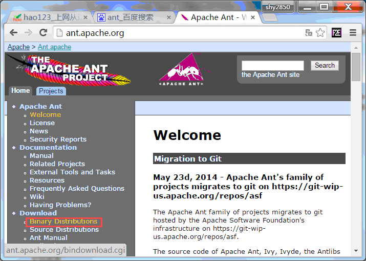
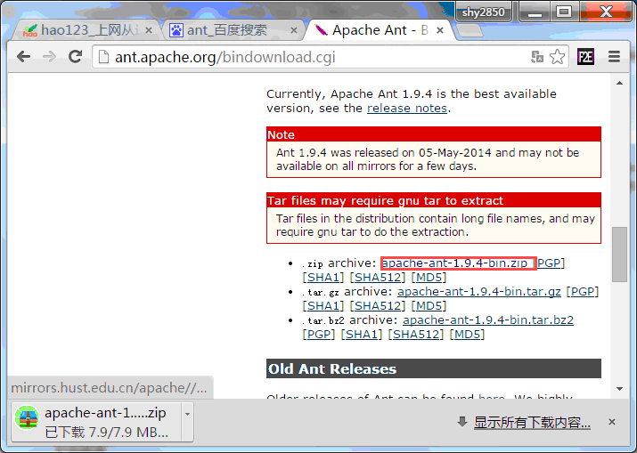
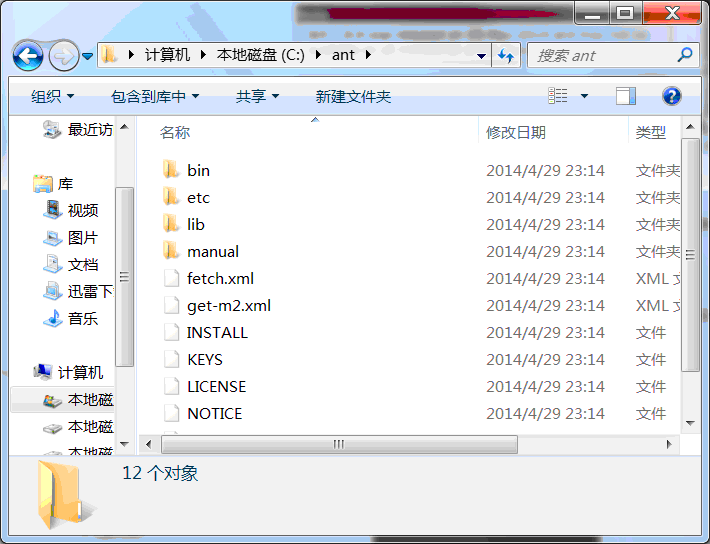
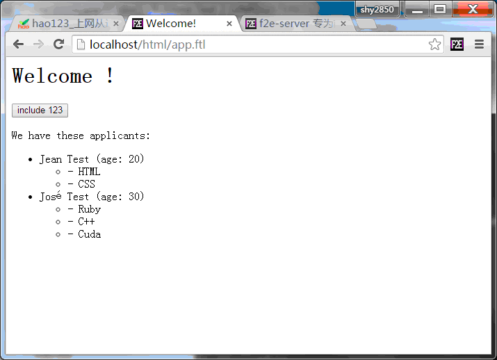

简介
f2e-server 通过中间件的方式支持动态的编译LESS/CoffeeScript/Jade/Markdown等类型代码
安装使用
在安装目录中使用 $ npm install 命令将package.json中的开发依赖全部安装
或者分别安装 less、 coffee-script、jade、markdown、freemarker.js
安装完成开启服务器, 在服务器下直接访问指定后缀名资源，将能够获取编译后的结果 查看如下 phone.less
如果需要对需要编译的源文本进行简单修改, 可使用如下配置:
exports["localhost"] = {
"root": "D:\\doc\\",
"middleware": {
get: function(rs){
return rs.replace(/\<%(.*?)%\>/g,"");
}
}
}使用freemarker
注 ： 在windows下面使用freemarker.js, 除了需要安装Java环境(一般操作系统都自带了1.6以上的jre)以外, 还需要安装 Apache Ant

进入下载页面,并下载

因为freemarker.js要求ant安装目录为 c:/ant 需要将下载完成的 zip 文件解压到这个目录

例 ：
app.ftl
<html>
<head>
<title>Welcome!</title>
</head>
<body>
<#-- Greet the user with his/her name -->
<h1>Welcome ${user!}!</h1>
<#include "123.ftl">
<p>We have these animals:
<ul>
<#list applicants as applicant>
<li>${applicant.name} (age: ${applicant.age})
<ul>
<#list applicant.skills as skill>
<li>
- ${skill}
</li>
</#list>
</ul>
</li>
</#list>
</ul>
</body>
</html> app.json
{
"applicants":[
{
"name": "Jean Test",
"maidenName": "Jean Test",
"age": 20,
"skills": [ "HTML", "CSS" ],
"testResults": { "a": 10.5, "b": 20, "c": 30 },
"decided": true
},
{
"name": "José Test",
"maidenName": null,
"age": 30,
"skills": [ "Ruby", "C++", "Cuda" ],
"testResults": { "a": 20, "b": 30, "c": 40 },
"decided": false
}
]
}123.ftl
<button>include 123</button>输出结果：

扩展和issue
f2e-server 内置多种中间件实现 nodeLib/filter/middleware.js
var middleware = {
coffee: function(req, resp, rs, pathname, DEBUG){
var scriptStr = require("coffee-script").compile( rs );
//"middleware-type" 用以项目输出时转换后缀名
resp.writeHead(200, {"middleware-type": 'js', "Content-Type": mime.get('js')});
if(DEBUG){
resp.end( scriptStr );
}else{
mini.js(scriptStr, resp);
}
},
less: function(req, resp, rs, pathname, DEBUG){
require("less").render(rs, {
paths: [ pathname.replace(/(\/[^\/]+?)$/,"") ],
compress: !DEBUG
}, function (err, output) {
if (err) { throw err }
else{
resp.writeHead(200, {"middleware-type": 'css', "Content-Type": mime.get('css')});
resp.end( output.css );
}
});
},
jade: function(req, resp, rs){
resp.writeHead(200,{"middleware-type": 'html', "Content-Type": mime.get('html')});
var output = require('jade').render(rs);
resp.end( output );
},
md: function(req, resp, rs){
resp.writeHead(200,{"middleware-type": 'html', "Content-Type": mime.get('html')});
var output = require( "markdown" ).markdown.toHTML(rs + '');
resp.end( '<style>code{padding:2px 8px;background:#eee;}</style>' + output );
},
ftl: function(req, resp, rs, pathname){
resp.writeHead(200,{"middleware-type": 'html', "Content-Type": mime.get('html')});
var Freemarker = require('freemarker.js');
var fm = new Freemarker({
viewRoot: req.util.conf.root,
options: {}
});
var dataObj = JSON.parse( fs.readFileSync( pathname.replace(/\.ftl/,".json") ) ),
tmp = req.$.title+'.tmp',
tmpUrl = req.util.conf.root + tmp;
fs.writeFile( tmpUrl, rs, function(err){
if(err){throw err;}
fm.render( tmp, dataObj, function(err, html) {
if(err){
throw err;
}else{
resp.end( html );
}
fs.unlink(tmpUrl);
});
});
}
};从上面的4个样例中, 可以比较清楚的了解怎么扩展一个中间件
你只需要在 middleware 属性中新增一组属性, 对应关系如下:
- 属性名： -> 需要编译的中间件文件后缀名
- middleware-type： -> 项目输出时, 对应文件修改后缀名
- DEBUG： -> 判断是否进行资源压缩, 为
true时 不压缩, 插件扩展可以根据此参数进行设置
了解一下github有关如何 “pull request”, 可以将你扩展的中间件提交给我们, 我们会选择其中优秀的部分。